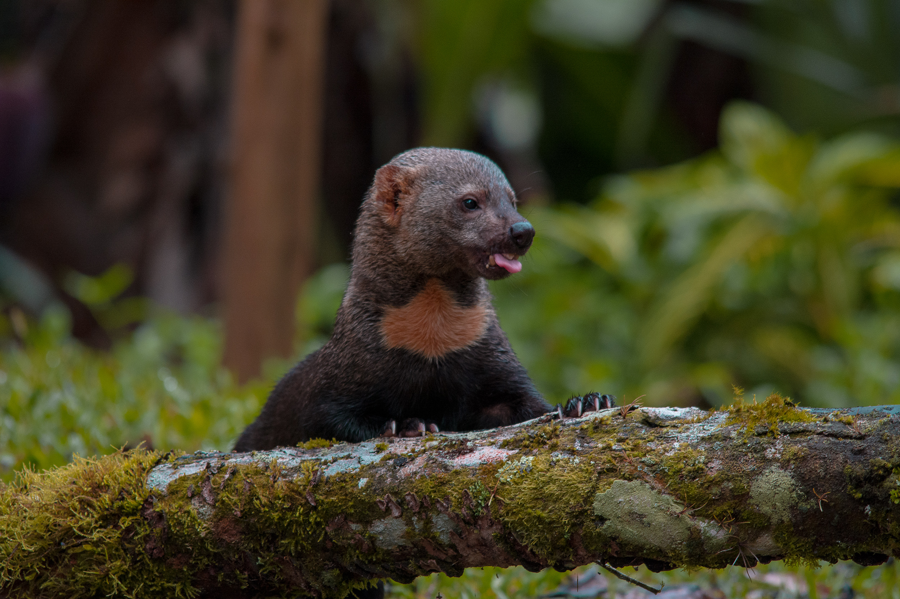
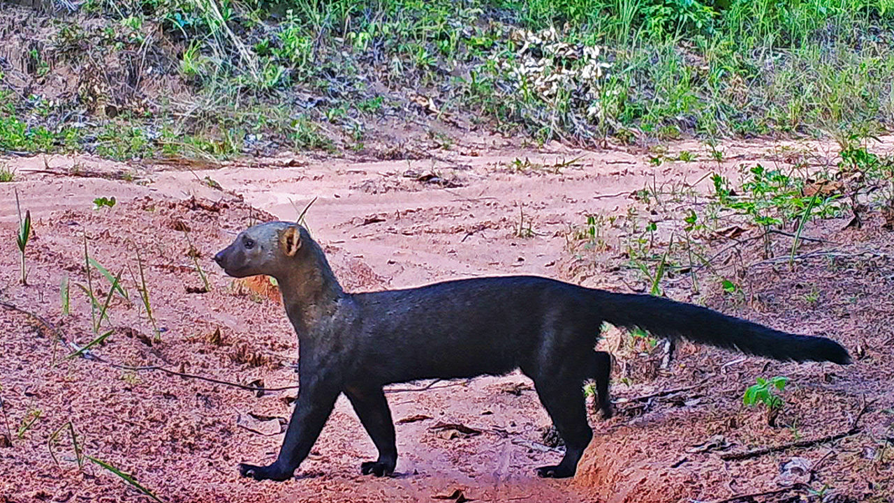
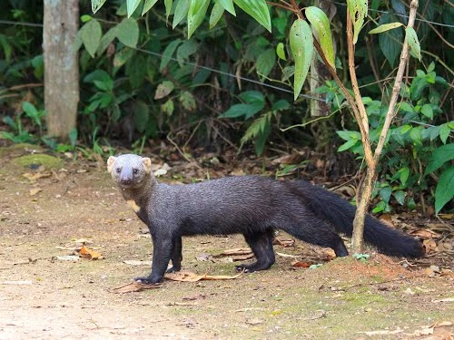
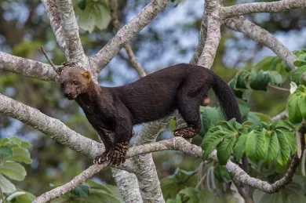
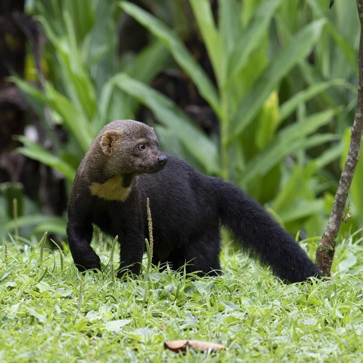
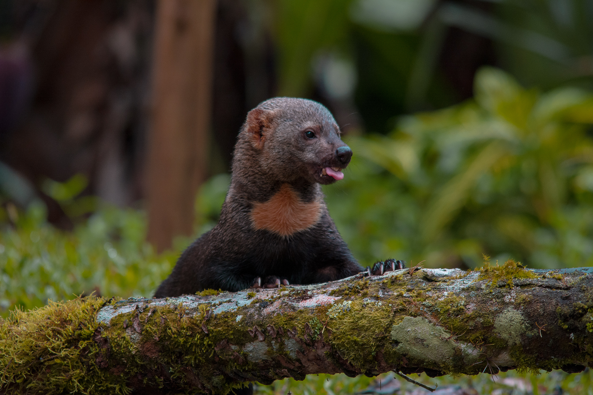
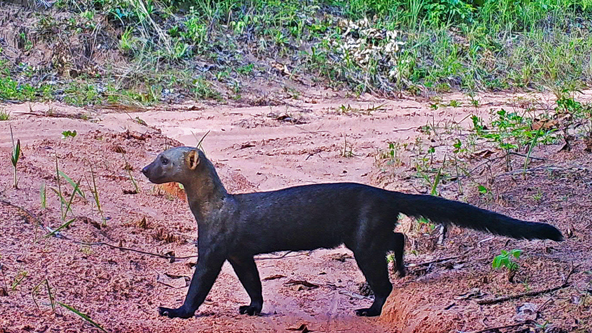
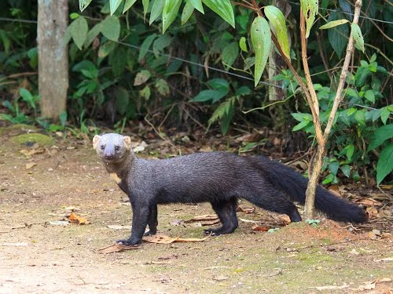
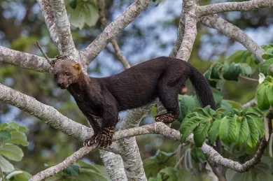
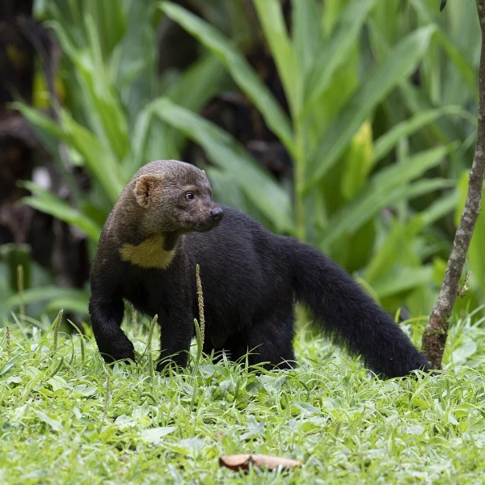

Nomes Populares: Conhecido também como "irara" e "gato-marmoreado"
Classificação Biológica
Domínio: Eukaryota
Reino: Animalia
Filo: Chordata
Classe: Mammalia
Ordem: Carnivora
Família: Mustelidae
Gênero: Eira
Espécie: E. barbara
Nutrição Geral e Hábitos Alimentares
Tipo de Nutrição: Heterotrófico
A irara é um carnívoro que se alimenta principalmente de pequenos mamíferos, aves, répteis e insetos. Sua dieta pode variar dependendo da disponibilidade de alimentos em seu habitat e pode incluir também frutas e ovos.
Morfologia
Pelagem e Corpo A pelagem da irara é densa e pode variar de marrom a preto, frequentemente com padrões de manchas ou listras. O corpo é robusto e alongado, com pernas curtas e uma cauda relativamente longa e espessa. Possui uma cabeça pequena em relação ao corpo, com orelhas redondas e olhos grandes. Órgãos Respiratórios O aparelho respiratório da irara inclui narinas, fossas nasais, cavidade nasal, seios paranasais, faringe, laringe, traqueia e pulmões. A estrutura respiratória é similar a outros carnívoros, com pulmões localizados na cavidade torácica. Patas As patas são adaptadas para a locomoção terrestre e têm garras afiadas, essenciais para escalar e capturar presas.
Comportamento
As iraras são animais solitários e territoriais. São bastante ágeis e têm habilidades excepcionais de escalada e natação. São noturnas e possuem um comportamento ativo, passando a maior parte do tempo procurando alimento e explorando seu território. São conhecidas por suas vocalizações e comportamento agressivo quando ameaçadas.
Ocorrência
A irara é encontrada em diversas áreas da América Central e América do Sul, incluindo florestas tropicais e subtropicais. Sua distribuição abrange países como Brasil, Argentina, Paraguai, e Uruguai. Prefere habitats florestais e áreas de vegetação densa.
Mapa de Ocorrência
Reprodução
Sistema de Acasalamento: A irara tem um sistema de acasalamento solitário, com encontros entre machos e fêmeas ocorrendo principalmente durante a época de reprodução. Reprodução ao Longo do Ano: A reprodução ocorre principalmente durante a estação chuvosa. Gestação: A gestação dura cerca de 70 a 80 dias. Ninhadas: As fêmeas geralmente dão à luz de dois a quatro filhotes por ninhada. Os filhotes nascem cegos e dependem da mãe para alimentação e cuidados até estarem mais independentes.
 








